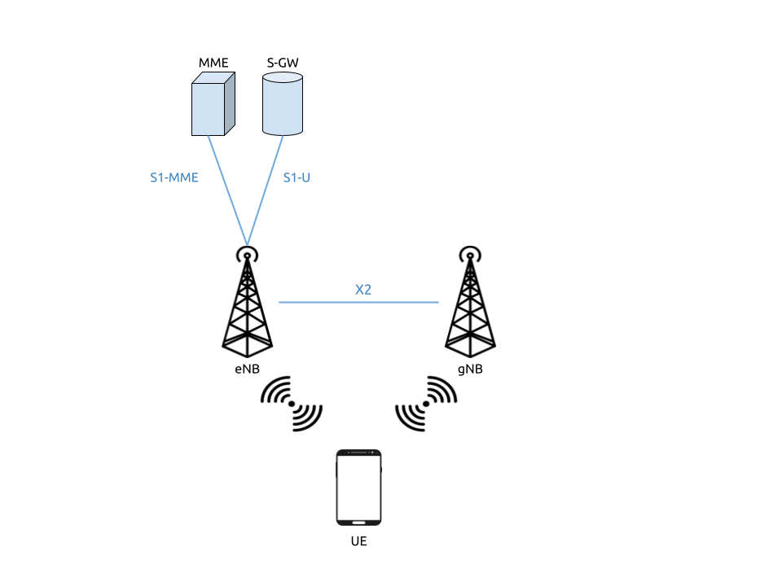

5G NSA srsUE
Introduction
The 21.04 release of srsRAN 4G brought 5G NSA (Non-Standalone) support to srsUE. This application note shows how the UE can be used with a third-party 5G NSA network. In this example, we use the Amari Callbox Classic from Amarisoft to provide the network.
5G NSA: What you need to know

5G NSA Mode 3
5G Non-Standalone mode provides 5G support by building upon and using pre-existing 4G infrastructure. A secondary 5G carrier is provided in addition to the primary 4G carrier. A 5G NSA UE connects first to the 4G carrier before also connecting to the secondary 5G carrier. The 4G anchor carrier is used for control plane signaling while the 5G carrier is used for high-speed data plane traffic.
This approach has been used for the majority of commercial 5G network deployments to date. It provides improved data rates while leveraging existing 4G infrastructure. UEs must support 5G NSA to take advantage of 5G NSA services, but existing 4G devices are not disrupted.
Limitations
The current 5G NSA UE application has a few feature limitations that require certain configuration settings at both the gNB and the core network. The key feature limitations are as follows:
4G and NR carrier need to use the same subcarrier-spacing (i.e. 15 kHz) and bandwidth (we’ve tested 10 and 20 MHz)
Only DCI format 0_0 (for Uplink) and 1_0 (for Downlink) supported
NR carrier needs to use RLC UM (NR RLC AM not yet supported)
Support for sub-6Ghz (FR1) spectrum
Hardware Requirements
For this application note, the following components are used:
Amari Callbox with 5G NSA support as eNB/gNB and core
AMD Ryzen5 3600X Linux PC as UE compute platform
Ettus Research USRP X310 connected over 10GigE as UE RF front-end
The Amari Callbox is an LTE/NR SDR-based UE test solution from Amarisoft. It contains an EPC/5GC, an eNodeB, a gNodeB, an IMS server, an eMBMS server and an Intel i7 Linux PC with PCIe SDR cards. The gNodeB is release 15 compliant and supports both NSA and SA modes. A further outline of the specifications can be found in the data sheet. This test solution was chosen as it’s widely available, easily configurable, and user-friendly.
Hardware Setup

Tests may be carried out over-the-air or using a cabled setup. For this example, we use a cabled setup between the UE and the eNB/gNB (i.e from the X310 to the PCIe SDR cards on the Callbox). These connections run through 30dB attenuators as shown in the figure above. The PPS inputs for the accurate clocking of both the UE and Callbox are also shown. Both UE and Callbox require accurate clocks - in our testing we provide PPS inputs to both.
Configuration
To set-up and run the 5G NSA network and UE, the configuration files for both the Callbox and srsUE must be changed.
All of the modified configuration files have been included as attachments to this App Note. It is recommended you use these files to avoid errors while changing configs manually. Any configuration files not included here do not require modification from the default settings.
UE files:
Callbox files:
srsUE
The following changes need to be made to the UE configuration file to allow it to connect to the Callbox in NSA mode.
Firstly the following parameters need to be changed under the [rf] options so that the X310 is configured optimally:
[rf]
tx_gain = 10
nof_antennas = 1
device_name = uhd
device_args = type=x300,clock=external,sampling_rate=11.52e6,lo_freq_offset_hz=11.52e6
srate = 11.52e6
The next set of changes need to be made to the [rat.eutra] options. This make sure the anchor cell is found by the UE:
[rat.eutra]
dl_earfcn = 300
Finally the [rat.nr] options need to be configured for 5G NSA mode operation:
[rat.nr]
#enable 5G data link
nof_carriers = 1
Callbox
To correctly configure the Callbox changes must be made to the following files: mme.cfg and gnb_nsa.cfg.
MME Configuration
The mme.cfg file must be changed to reflect the QoS Class Identifier (QCI) which will be used across the network. We use QCI 7 as NR RLC UM is supported by the UE. The following change must be made to the erabs: configurations:
qci: 7,
gNB NSA Configuration
gnb_nsa.cfg is responsible for the configuration of both the LTE and NR cells needed for NSA mode. The LTE cell will mainly be used for the control plane, while the NR cell will be used for the data plane.
The number of Resource Blocks (RBs) and number of antennae used in the DL must first be modified:
#define N_RB_DL 50 // Values: 6 (1.4MHz), 25 (5MHz), 50 (10MHz), 75 (15MHz), 100 (20MHz)
#define N_ANTENNA_DL 1 // Values: 1 (SISO), 2 (MIMO 2x2), 4 (MIMO 4x4)
The NR cell bandwidth should also be set:
#define NR_BANDWIDTH 10 // NR cell bandwidth. With the PCIe SDR50 board, up to 50 MHz is supported.
The TX gain, sampling rates for each cell and the UL & DL frequencies for the NR cell must be set. The tx_gain is set for the rf_driver::
tx_gain: 70.0, /* TX gain (in dB) */
The sample rate is set for the LTE cell in the rf_ports: configuration:
/* RF port for the LTE cell */
sample_rate: 11.52,
The sample rate and DL/UL frequencies are set for the NR cell in the rf_ports: configuration:
/* RF port for the NR cell */
sample_rate: 23.04,
dl_freq: 3507.84, // Moves NR DL LO frequency -5.76 MHz
ul_freq: 3507.84, // Moves NR UL LO frequency -5.76 MHz
The NR absolute radio-frequency channel number (ARFCN) for the DL needs to be changed to match the new DL frequency that has been set:
dl_nr_arfcn: 634240, /* 3507.84 MHz */
Next, the default settings of the NR cell must be adjusted. The subcarrier spacing(s) should be changed in the nr_cell_default: configuration:
subcarrier_spacing: 15, /* kHz *
ssb_subcarrier_spacing: 30,
The timing offset should be set to 0:
n_timing_advance_offset: 0,
The TDD config options now need to be adjusted:
period: 10,
dl_slots: 6,
dl_symbols: 0,
ul_slots: 3,
ul_symbols: 0,
After this the PRACH configuration needs to be adjusted:
#if NR_TDD == 1
prach_config_index: 0,
msg1_frequency_start: 1,
zero_correlation_zone_config: 0,
ra_response_window: 10, /* in slots */
For the PDCCH configuration (starting at line 411), the following changes must be made:
pdcch: {
common_coreset: {
rb_start: -1, /* -1 to have the maximum bandwidth */
l_crb: -1, /* -1 means all the bandwidth */
duration: 1,
precoder_granularity: "sameAsREG_bundle",
//dmrs_scid: 0,
},
dedicated_coreset: {
rb_start: -1, /* -1 to have the maximum bandwidth */
l_crb: -1, /* -1 means all the bandwidth */
duration: 1,
precoder_granularity: "sameAsREG_bundle",
//dmrs_scid: 0,
},
css: {
n_candidates: [ 1, 1, 1, 0, 0 ],
},
rar_al_index: 2,
uss: {
n_candidates: [ 0, 2, 1, 0, 0 ],
dci_0_1_and_1_1: false,
force_dci_0_0: true, // Forces DCI format 0_0 for Uplink
force_dci_1_0: true, // Forces DCI format 1_0 for Downlink
},
al_index: 1,
},
For the PDSCH configuration the following change needs to be made:
k1: [ 8, 7, 6, 6, 5, 4],
QAM 64 must be selected for the Modulation Coding Scheme (MCS) table:
mcs_table: “qam64”,
In the PUCCH set-up frequency hopping needs to be turned off:
freq_hopping: false,
For the pucch2 entry, the following settings can be selected, while the entries for pucch3 and pucch4 can be removed fully:
pucch2: {
n_symb: 2,
n_prb: 1,
freq_hopping: false,
simultaneous_harq_ack_csi: false,
max_code_rate: 0.25,
},
The final changes to the configuration file are made to pusch settings:
pusch: {
mapping_type: "typeA",
n_symb: 14,
dmrs_add_pos: 1,
dmrs_type: 1,
dmrs_max_len: 1,
tf_precoding: false,
mcs_table: "qam64", /* without transform precoding */
mcs_table_tp: "qam64", /* with transform precoding */
ldpc_max_its: 5,
k2: 4, /* delay in slots from DCI to PUSCH */
p0_nominal_with_grant: -90,
msg3_k2: 5,
msg3_mcs: 4,
msg3_delta_power: 0, /* in dB */
beta_offset_ack_index: 9,
/* hardcoded scheduling parameters */
n_dmrs_cdm_groups: 1,
n_layer: 1,
/* if defined, force the PUSCH MCS for all UEs. Otherwise it is
computed from the last received PUSCH. */
/* mcs: 16, */
},
The Callbox should now be correctly configured for 5G NSA testing with srsUE.
Usage
Following configuration, we can run the UE and Callbox. The following order should be used when running the network:
MME
eNB/ gNB
UE
MME
To run the MME the following command is used:
sudo ltemme mme.cfg
eNB/ gNB
Next the eNB/ gNB should be instantiated, using the following command:
sudo lteenb gnb-nsa.cfg
Console output should be similar to:
LTE Base Station version 2021-03-15, Copyright (C) 2012-2021 Amarisoft
This software is licensed to Software Radio Systems (SRS).
Support and software update available until 2021-10-29.
RF0: sample_rate=11.520 MHz dl_freq=2140.000 MHz ul_freq=1950.000 MHz (band 1) dl_ant=1 ul_ant=1
RF1: sample_rate=23.040 MHz dl_freq=3507.840 MHz ul_freq=3507.840 MHz (band n78) dl_ant=1 ul_ant=1
UE
To run the UE, use the following command:
sudo srsue ue.conf
Once the UE has been initialised you should see the following:
Opening 2 channels in RF device=uhd with args=type=x300,clock=external,sampling_rate=11.52e6,lo_freq_offset_hz=11.52e6,None
This will be followed by some information regarding the USRP. Once the cell has been found successfully you should see the following:
Found Cell: Mode=FDD, PCI=1, PRB=50, Ports=1, CFO=0.1 KHz
Found PLMN: Id=00101, TAC=7
Random Access Transmission: seq=17, tti=8494, ra-rnti=0x5
RRC Connected
Random Access Complete. c-rnti=0x3d, ta=3
Network attach successful. IP: 192.168.4.2
Amarisoft Network (Amarisoft) 20/4/2021 23:32:40 TZ:105
RRC NR reconfiguration successful.
Random Access Transmission: prach_occasion=0, preamble_index=0, ra-rnti=0x7f, tti=8979
Random Access Complete. c-rnti=0x4601, ta=23
---------Signal----------|-----------------DL-----------------|-----------UL-----------
rat pci rsrp pl cfo | mcs snr iter brate bler ta_us | mcs buff brate bler
lte 1 -52 13 12 | 19 40 0.5 15k 0% 7.3 | 16 0.0 10k 4%
nr 500 4 0 881m | 2 31 1.0 0.0 0% 0.0 | 17 0.0 6.0k 0%
lte 1 -49 7 -4.8 | 28 40 0.5 1.4k 0% 7.3 | 0 0.0 0.0 0%
nr 500 3 0 -5.9 | 27 35 1.0 1.3k 0% 0.0 | 28 0.0 148k 0%
lte 1 -58 16 -3.7 | 28 40 0.5 1.4k 0% 7.3 | 0 0.0 0.0 0%
nr 500 3 0 -7.7 | 27 35 1.0 1.3k 0% 0.0 | 28 0.0 148k 0%
lte 1 -61 19 428m | 28 40 0.5 1.4k 0% 7.3 | 0 0.0 0.0 0%
nr 500 4 0 2.2 | 27 30 1.4 67k 0% 0.0 | 28 28 143k 0%
lte 1 -61 19 -507m | 28 40 0.5 1.4k 0% 7.3 | 0 0.0 0.0 0%
nr 500 4 0 924m | 27 24 1.9 18M 0% 0.0 | 28 0.0 3.7k 0%
lte 1 -61 19 3.8 | 28 40 0.5 1.4k 0% 7.3 | 0 0.0 0.0 0%
nr 500 4 0 3.5 | 27 24 1.9 18M 0% 0.0 | 0 0.0 0.0 0%
lte 1 -61 19 3.8 | 28 40 0.5 1.4k 0% 7.3 | 0 0.0 0.0 0%
nr 500 4 0 3.1 | 27 24 1.9 18M 0% 0.0 | 0 0.0 0.0 0%
To confirm the UE successfully connected, you should see the following on the console output of the eNB:
PRACH: cell=00 seq=17 ta=3 snr=28.3 dB
PRACH: cell=02 seq=0 ta=23 snr=28.3 dB
----DL----------------------- --UL------------------------------------------------
UE_ID CL RNTI C cqi ri mcs retx txok brate snr puc1 mcs rxko rxok brate #its phr pl ta
1 000 003d 1 15 1 15.0 0 16 5.58k 15.4 34.7 18.8 3 13 5.27k 1/3.7/6 31 38 0.0
3 002 4601 1 15 1 27.0 0 1 320 36.2 - 27.7 0 87 64.0k 1/2.1/4 - - -0.3
1 000 003d 1 15 1 28.0 0 4 1.42k 16.2 34.8 20.0 1 1 420 1/3.5/6 31 38 0.0
3 002 4601 1 15 1 27.0 0 4 1.28k 28.1 - 28.0 0 200 148k 2/2.1/3 - - -0.3
1 000 003d 1 15 1 28.0 0 4 1.42k 16.1 34.8 - 0 0 0 - 31 38 0.0
3 002 4601 1 15 1 27.9 0 1037 16.8M 29.9 - 27.9 1 21 16.1k 1/2.3/5 - - -0.3
1 000 003d 1 15 1 28.0 0 4 1.42k 16.3 35.2 - 0 0 0 - 31 38 0.0
3 002 4601 1 15 1 27.9 5 1120 18.3M 29.9 - - 0 0 0 - - - -
1 000 003d 1 15 1 28.0 0 4 1.42k 16.0 34.8 - 0 0 0 - 31 38 0.0
3 002 4601 1 15 1 27.9 0 1125 18.4M 29.9 - - 0 0 0 - - - -
srsGUI Support

srsGUI is also supported for use with the UE in NSA mode. An example of the plots produced can be seen above.
To enable srsGUI, see here.
Note
If you have already built srsRAN 4G without srsGUI support, you must re-do so after srsGUI has been built.
Understanding the console Trace
The console trace output from the UE contains useful metrics by which the state and performance of the UE can be measured. The traces can be activated by pressing t+Enter after UE has started. The following metrics are given in the console trace:
---------Signal----------|-----------------DL-----------------|-----------UL-----------
rat pci rsrp pl cfo | mcs snr iter brate bler ta_us | mcs buff brate bler
The following gives a brief description of which each column represents:
RAT: This is a NSA specific column. It indicates the carrier for which the information is displayed.
PCI: Physcial Cell ID
RSRP: Reference Signal Receive Power (dBm)
PL: Pathloss (dB)
CFO: Carrier Frequency Offset (Hz)
MCS: Modulation and coding scheme (0-28)
SNR: Signal-to-Noise Ratio (dB)
ITER: Average number of turbo decoder (LTE) or LDPC (NR) iterations
BRATE: Bitrate (bits/sec)
BLER: Block error rate
TA_US: Timing advance (us)
BUFF: Uplink buffer status - data waiting to be transmitted (bytes)
Troubleshooting
The UE currently doesn’t support NR cell search and cell measurements. It therefore uses a pre-configured physical cell id (PCI) to send artificial NR cell measurements to the eNB. The reported PCI in those measurements is 500 by default (default value in Amarisoft configurations). If the selected PCI for the cell of interest is different, the value can we overwritten with:
$ ./srsue/src/srsue --rrc.nr_measurement_pci=140
Or by updating the [rrc] options in the config file:
[rrc]
nr_measurement_pci = 140